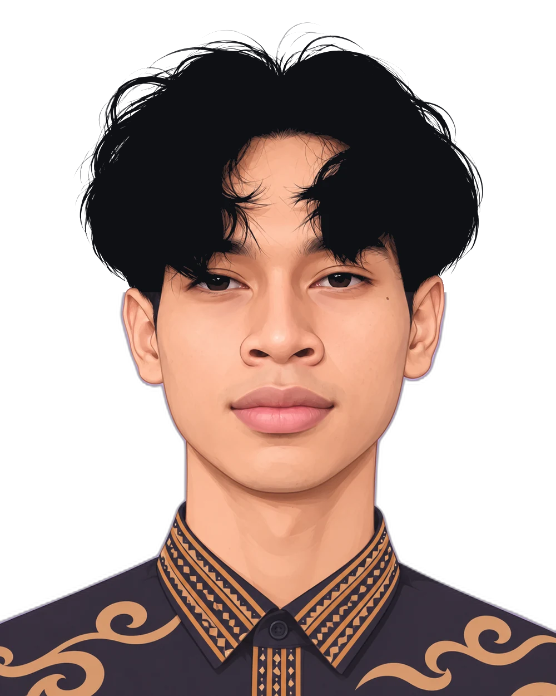

Saya Kafka, frontend developer yang suka mengubah desain menjadi halaman web yang cepat, rapi, dan enak dipakai. Saya bekerja dengan React, Next.js, dan TypeScript, dengan perhatian pada detail animasi dan aksesibilitas. Saya senang berkolaborasi dengan tim dan klien yang ingin produknya tampil beda. Yuk, bikin sesuatu yang keren bareng.
Hubungi sayaMembangun antarmuka dengan React, Next.js, dan TypeScript untuk produk klien, dengan fokus pada kecepatan, animasi halus, dan aksesibilitas.
Lumen Studio2024 – sekarang
Mengubah desain Figma menjadi situs company profile dan toko online yang responsif untuk usaha kecil dan menengah.
Mandiri2022 – 2024
Menyusun pustaka komponen yang dipakai bersama tim produk, supaya tampilan antarhalaman tetap konsisten.
Kopi Digital2021 – 2022
Belajar alur kerja tim: code review, Git, dan menguji tampilan di berbagai ukuran layar.
Inovasi Nusa2020 – 2021